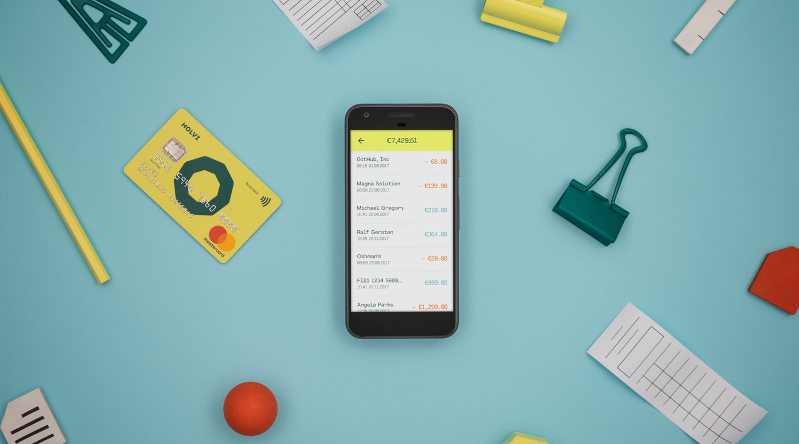

At the heart of my practice lies a fascination with connection, how people relate to products, to spaces, and to one another. Whether through a campaign, an exhibition, or any other reason to come together, I like to create experiences where communication becomes something you can feel, not just understand.
What I do
I’m Mike Morlock, a brand activation & campaign consultant based in Berlin. I help brands turn strategy into experiences people remember: brand strategy and positioning, integrated campaigns, experiential brand activations, events and trade fairs, community building and creator & ambassador programs – from the first concept to the last day of execution.- Brand strategy & positioning
- Campaign concept, creative direction & production
- Experiential brand activations & event management
- Trade fairs & B2B event marketing
- Community building, creator & ambassador programs
- Art direction & exhibition production
Experience
Table Studio – Community & experience studio in Berlin · table-studio.comHirschberg Studios – Strategy Consulting (freelance) · 2025–today
mikemorlock.de – Brand, Campaign & Activation Consultant (freelance) · 2020–today
hellgrün – Head of Marketing & Brand (freelance) · 2024–2025
COUNCIL+ – Co-Founder & Director, contemporary art gallery in Berlin · 2021–2025
Holvi – Marketing & Brand Lead DACH · 2017–2020
N26 – Brand Manager · 2015–2017
Selected clients
Volkswagen × Hermes · Werder Bremen · 42 Berlin & 42 Wolfsburg · Toyota Mobility Foundation · BVG · Deutsche Bahn · Hermes · betahaus · Impact Hub Berlin · vomFASS · Bechstein Network · KURA ONE · Plateau UrbainSee all case studies →
Contact
Available for freelance projects in Berlin and remote.mike.morlock@me.com · LinkedIn